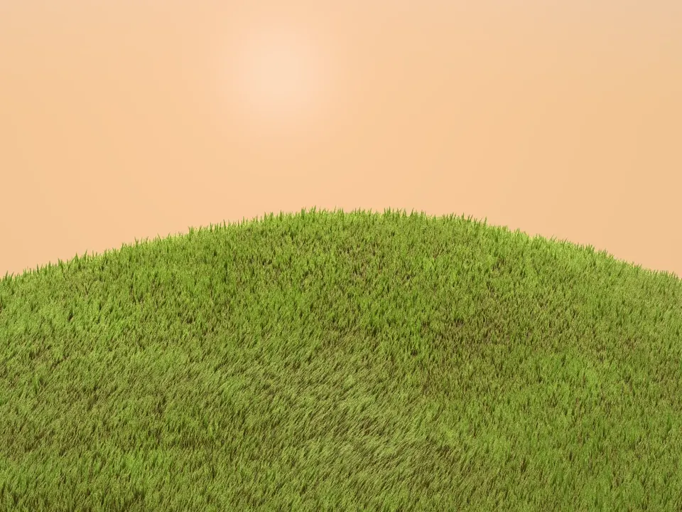
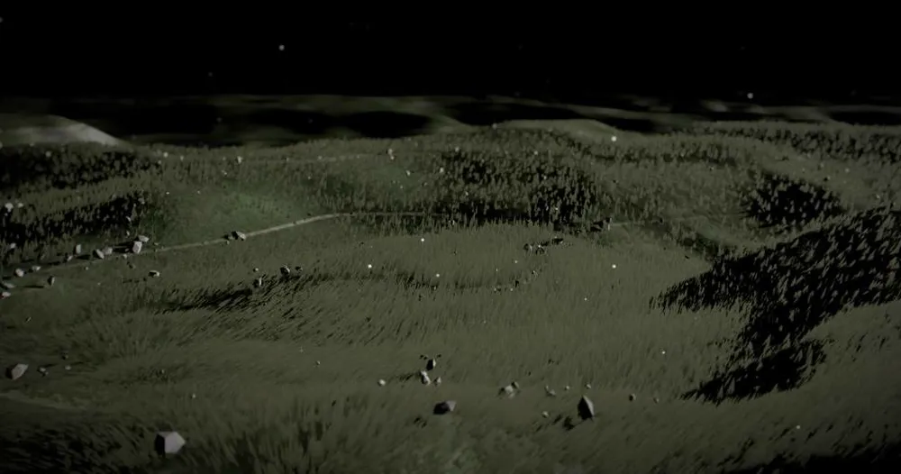
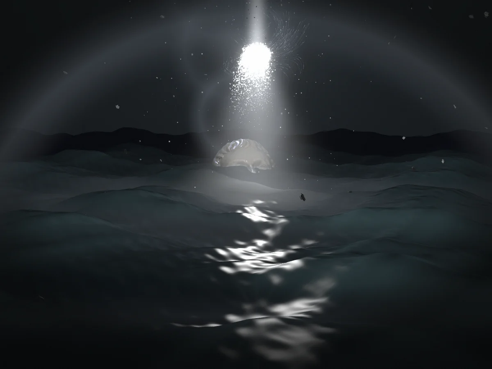

Chapter 01 · Hill
Scroll down. The line lifts away, and the next title comes out of the blur word by word.

Chapter 02 · Meadow
One scroll variable drives every word. The delays live in CSS, keyed by each word's index.

Chapter 03 · Sea
The words are split once. After that, a scroll frame writes a single number.